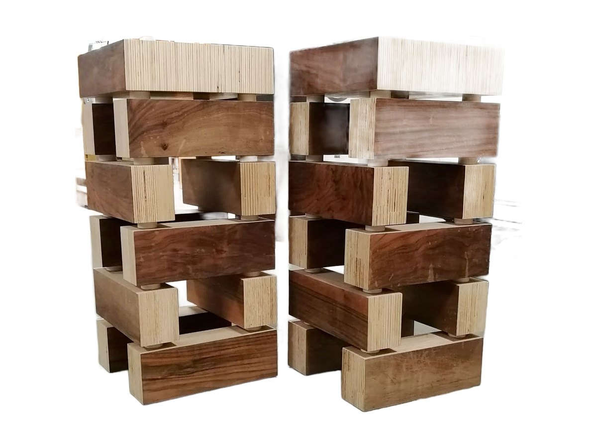
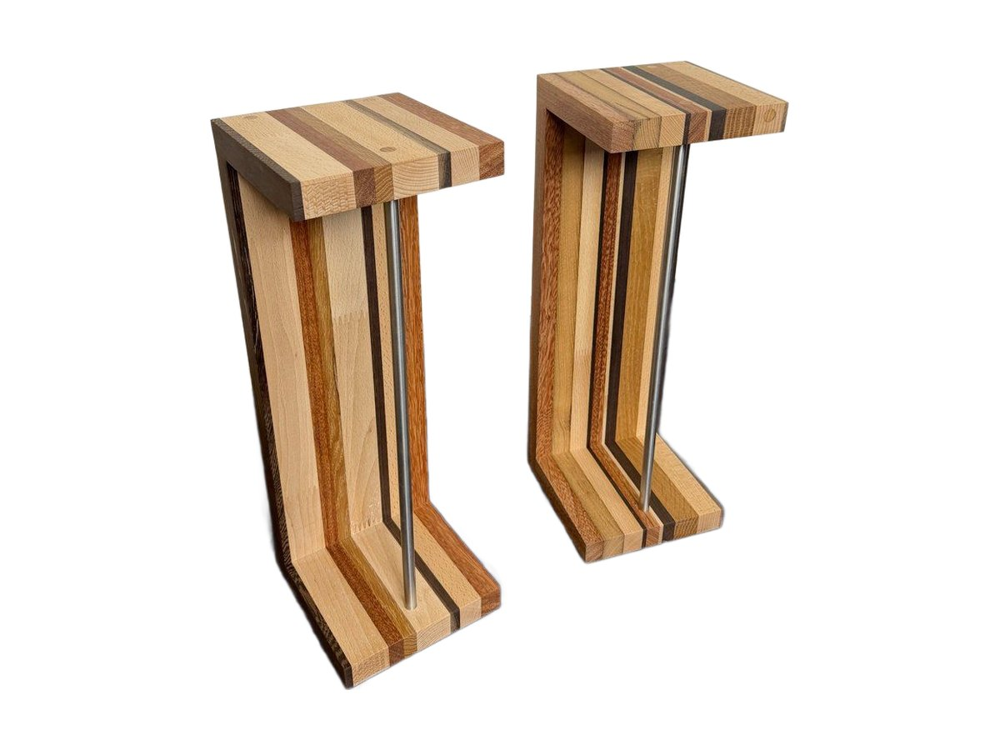
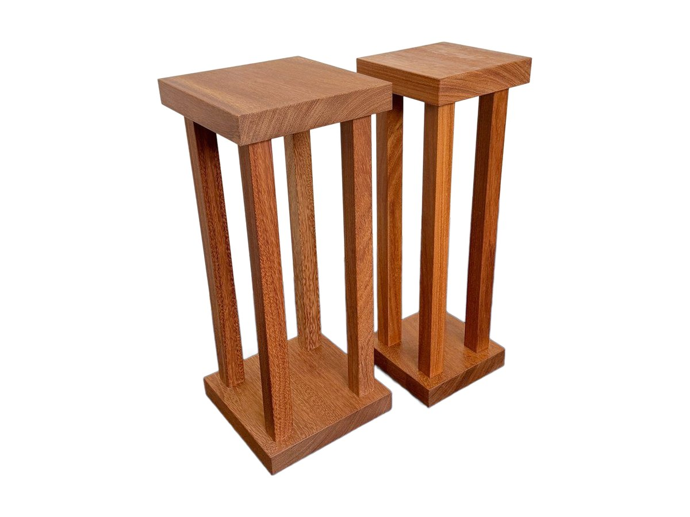
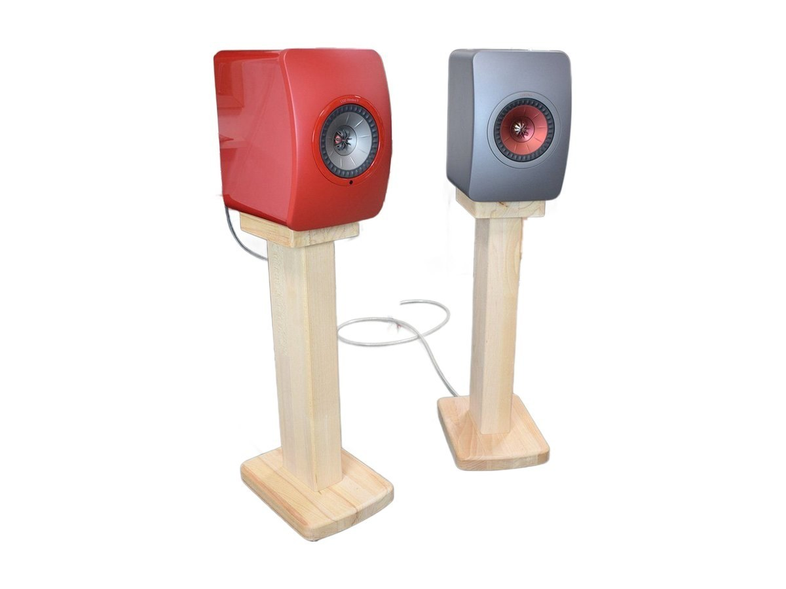

Speaker stands
Wooden speaker stands, handmade.
Stands for stand-mount speakers, in solid wood and plywood. They suit any bookshelf speaker, even one that overhangs the top plate by a few centimetres: they bring the speakers up to ear height, decouple them from the floor and become a piece of furniture in their own right.

Wood Brick speaker stands
Blocks of Poplar plywood and Italian walnut, separated by washers that stop vibrations. Left natural.
See the Wood Brick
Extrasound Tree speaker stands
In solid Beech, shaped like a tree: a stepped base, a slender trunk and a top plate that opens out in steps.
See the Tree
Stile Pannello speaker stands
In solid Beech, with protruding slats like an acoustic panel: they correct the sound on two sides.
See the Stile Pannello
Extrasound Rigatini speaker stands
Stands for bookshelf speakers made of strips of different woods set side by side, with a stainless steel tube for stability.
See Rigatini
Extrasound Stylus speaker stands
A pair of stands for bookshelf speakers in solid Doussié: 4 cm thick base and top plate, slender columns, 61 cm high.
See Stylus
Art Triangle speaker stands
Solid beech stands with the column opened up by triangular cuts: a sculpture that holds up the speaker.
See Art Triangle
Modern Art Grey Buttons speaker stands
Frame speaker stands made of solid beech slats fixed with grey buttons: light to look at, solid in use.
See Modern Art Grey Buttons
Listelli Rado speaker stands
A column of solid beech slats set apart: the stand is light, 6.7 kg, and lets the light through.
See Listelli Rado
Extrasound Ground speaker stands
Low stands, 24 cm high, to lift larger speakers off the floor: poplar plywood side panels and steel crossbars.
See Ground
Tilting speaker supports
A pair of wooden supports that tilt bookshelf speakers towards the listener.
See the tilting supports
ESSE2 speaker stands
A pair of solid beech stands designed around the KEF LS50 Wireless II and LS50 Meta speakers, with cable routing.
See ESSE2How to choose a speaker stand.
A stand does three things: it brings the speaker to the right height, holds it steady and lifts it away from the floor and the wall. If it does those three things well, the speaker sounds the way it was designed to.
Height
The tweeter, the small driver at the top, should be at ear height when you are seated. My stands range from the 24 cm Ground, for large speakers, to the 75 cm Listelli Rado. To find your height there is the height calculator.
Top plate
The top should be roughly the size of the speaker's base. It does not need to match to the millimetre: a speaker that overhangs by 2-3 cm is perfectly fine. Every product page gives the plate size and a few examples of speakers that fit.
Wood
I build the stands in solid wood, mostly Beech and Doussié, or in thick plywood. Solid wood is heavy and rigid: it holds the speaker still and keeps the bass tight. Each model has its own design, from the blocks of the Wood Brick to the slats of the Stile Pannello, which also works like a small acoustic panel.
Resting on the floor
As standard the stands rest directly on the wood. If you have a rug or want to decouple them from the floor, I add spikes or feet on request, even after purchase.
Questions about the stands.
How tall should a speaker stand be?
Tall enough to bring the tweeter to ear height when you are seated. With a sofa and a bookshelf speaker that usually means 60 to 75 cm. For your own setup use the height calculator.
Will my speaker fit?
Almost certainly. Every product page gives the size of the top plate and a few examples of speakers that fit. The speaker can also overhang the plate by 2-3 cm without any problem.
Do the stands have spikes or feet?
As standard they rest directly on the wood. Spikes or feet can be added on request, even to stands you already own.
Can they be made to measure?
Yes. I can build a stand with the height, top plate and wood that suit your speakers. See how made to measure.
Is a stand or a cabinet better for speakers?
For a bookshelf speaker a stand is almost always the better choice: it brings it to the right height, moves it away from the wall and does not vibrate like a wide shelf. If the speakers have to sit on a low cabinet, a tilting support points them towards your ears.
Need a different size?
Fabrizio also builds new pieces, to the dimensions of your equipment and your home.